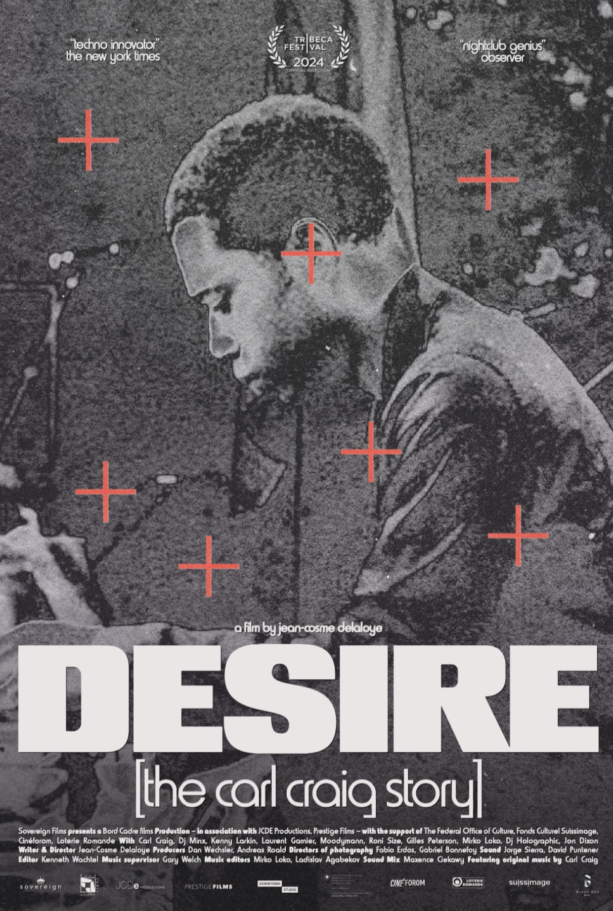

Films / Documentaire
Desire: The Carl Craig Story
Tribeca 2024
Post-produit chez Downtown Studio · son, image.

Synopsis
Un portrait du producteur de techno, DJ et créateur de label Carl Craig, et de sa ville, Détroit. Sur fond de déclin et de renouveau de la ville, le film retrace la carrière d'un pionnier dont la musique a été jouée au Montreux Jazz Festival et au Carnegie Hall.
Trente-cinq ans après ses débuts, Carl Craig est aussi exposé au MOCA de Los Angeles et au Dia Beacon de New York. Au sommet de son succès, il doit faire face à des difficultés qui pourraient l'éloigner de la piste de danse.